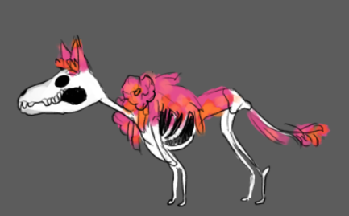

MarraKas

ID
November 2017 Personal Project
Duration : Ongoing Tools : Unity (3D)
Roles
Programming Game Design
In the mexican underworld many years after a violent earthquake, a xolotl dog pinata restores a damaged village by digging out and reforming the skeletons of the villagers. Through the game, the player explores the village in order to find and gather skeleton parts and the souls of the villagers. By combining new skeletons, the player brings life back in the village and opens new areas of the village as they help clear the rubble.